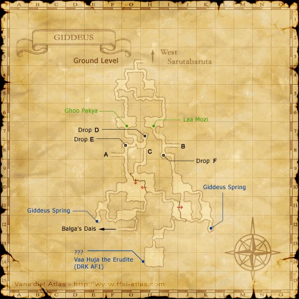

Before you begin
Be allied with Windurst, have Rank 1, and finish the preceding required story steps. Raise Rank Points if the mission is not offered.
Walkthrough
- Accept the mission and speak with Leepe-Hoppe on the Rhinostery roof in Windurst Waters (J-9) for the food and drink offerings.
- Enter Giddeus from West Sarutabaruta (F-8). Deliver the food to Laa Mozi at (H-7) and the drink to Ghoo Pakya at (G-7).
- Return to the Rhinostery roof for the scene.
- Report to a Windurst mission guard.
Locations and references
| Place / NPC | Location | Reference |
|---|---|---|
| Leepe-Hoppe | Windurst Waters (J-9), roof | Location reference |
| Offerings | Giddeus: Laa Mozi (H-7), Ghoo Pakya (G-7) | Location reference |
Route maps




Completion and reward
Rank 2; 1,000 gil
Area maps
Open a zone below, then select a map to enlarge it. Match the named floors and grid coordinates in the steps; these are reference area maps, not a live position tracker.
Windurst Waters


Giddeus


West Sarutabaruta

References
HorizonXI Wiki: Windurst 1-3 · LandSandBoat mission definition
The route summary covers the original story. Other servers’ extra rewards, level-cap settings and Trust rules are not promises of Zenith behavior. Confirm battlefield entry conditions in game.
Additional level-75 reference
| Mission Name | The Price of Peace |
| Number | 1-3 |
| Start NPC | Any Windurst Gate Guard |
| Requirements | Mission: 1-2 |
| Suggested Level | 13 |
| Items Needed | |
| Repeatable | No |
| Title Granted | --- |
| Reward | Rank 2, 1000 gil |
| ← Previous Mission | Next Mission → |
| The Heart of the Matter | Lost for Words |
| Replay Cutscenes | |
| The Price of Peace | Dienger - Windurst Waters (F-5) |
Walkthrough
Rhinostery
- After accepting the mission, head to the Rhinostery in the southern portion of Windurst Waters.
- Go up to the roof of the Rhinostery and talk to Leepe-Hoppe (J-9). He will give you Food Offering(Key Item) and Drink Offering (Key Item) and instruct you to take them to Giddeus.
- Go to Giddeus through West Sarutabaruta at F-8.
Giddeus
- Once in Giddeus, take all left-hand turns. You will eventually end up at H-7, where you will see a Yagudo NPC named Laa Mozi standing at the mouth of a cave entrance. Talk with him and he will take your Food Offering.
- Return to the entrance of the zone. This time, take all right-hand turns until you get to G-7. (You will have to cross a stream at one point.)
- You will soon see Ghoo Pakya standing at the mouth of a cave entrance. Talk to him and he will take your Drink Offering.
Rhinostery
- Return to the roof of the Rhinostery in Windurst Waters and another cutscene will appear when you reach the top of the stairs. Afterwards, report back to the Windurst Gate Guard to complete the mission.
- Some users have been able to finish the mission immediately by talking to Leepe-Hoppe; others have encountered the same dialogue they received before leaving for Giddeus, only to return the next day (after the JP Midnight server reset), speak to Leepe-Hoppe, and find themselves able to at last finish the mission. It is unclear what causes this issue.
Notes
- A level 10 job will get some aggro, but all of the beasts will check Easy Prey.
- At level 16, some Easy Prey Yagudo can aggro and cause Too Weak Yagudo to link. Care should be taken to avoid linking more than three or four at a time.
Game Description
- Mission Orders
- Receive two bags of food offerings from the Rhinostery, and deliver one bag to each of the Yagudo who stand by the altars of offerings in Giddeus. Don't forget to report back to the Rhinostery after completing the mission.
Adapted from Eden Wiki: The Price of Peace · Contributors and history · CC BY-SA 4.0. Revision 2826. Layout, links and optional background text adapted for Zenith.